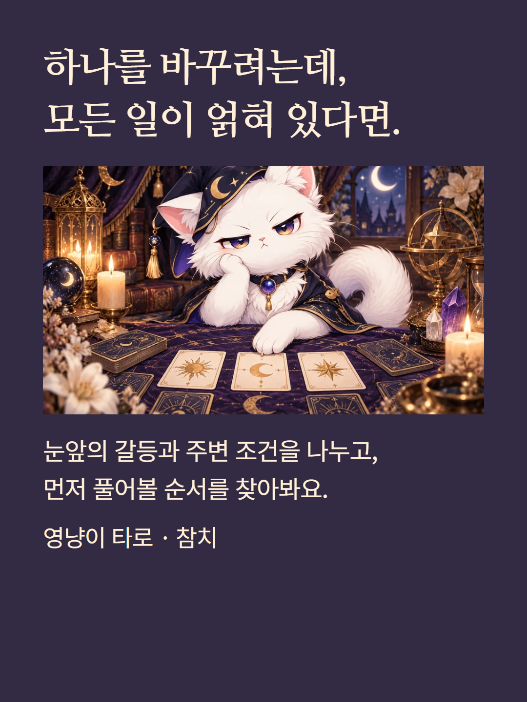
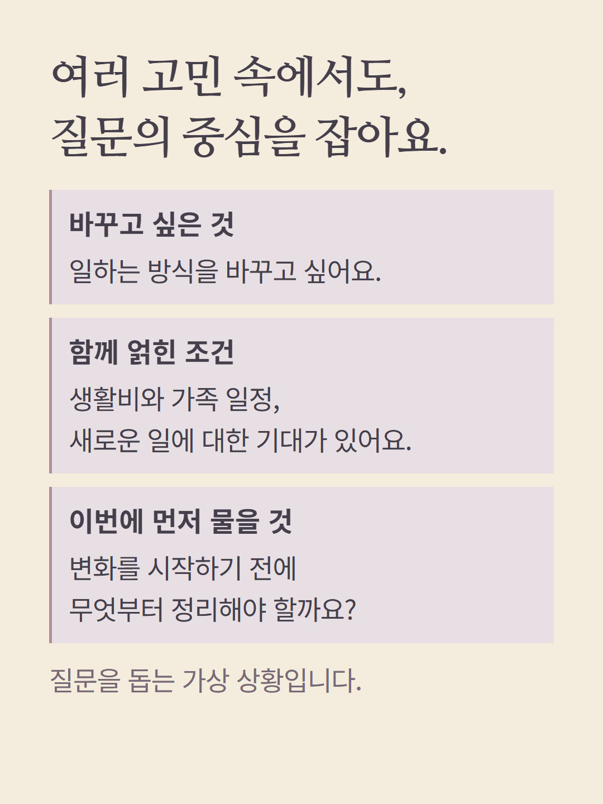
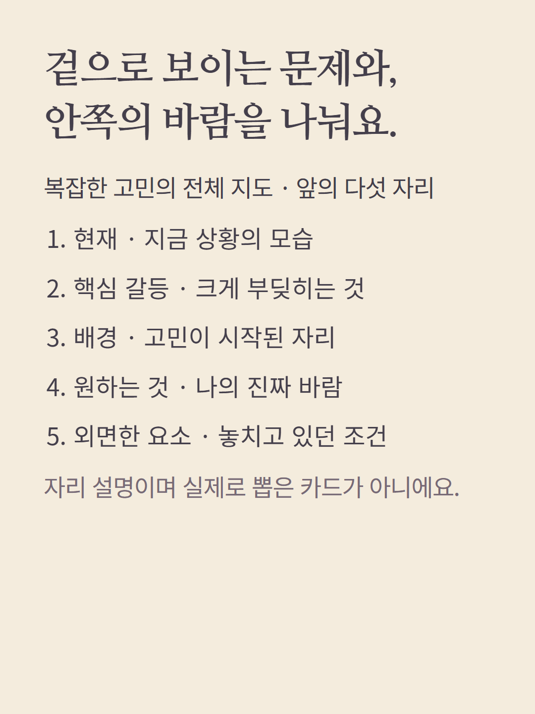
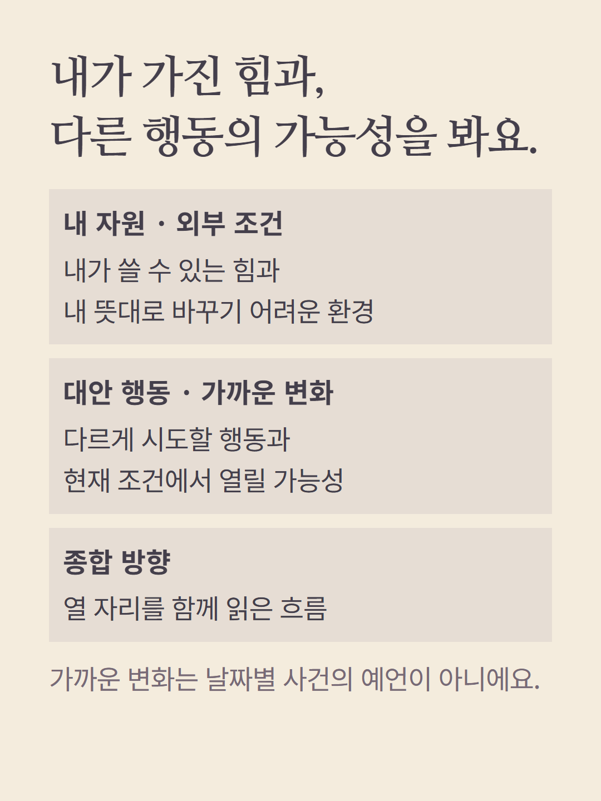
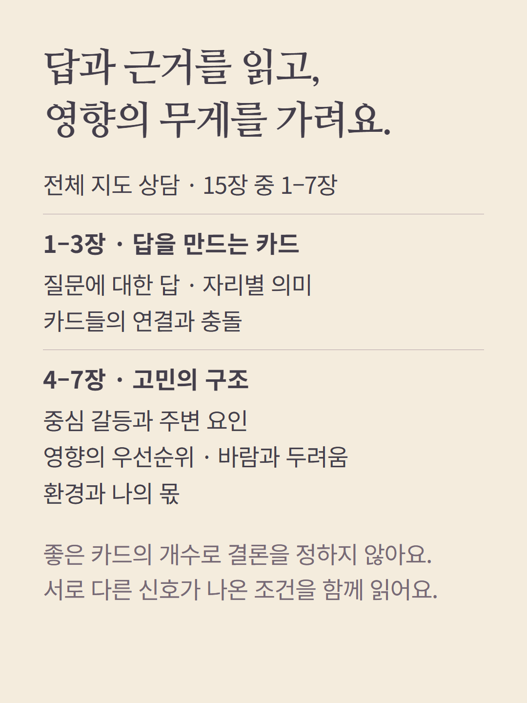
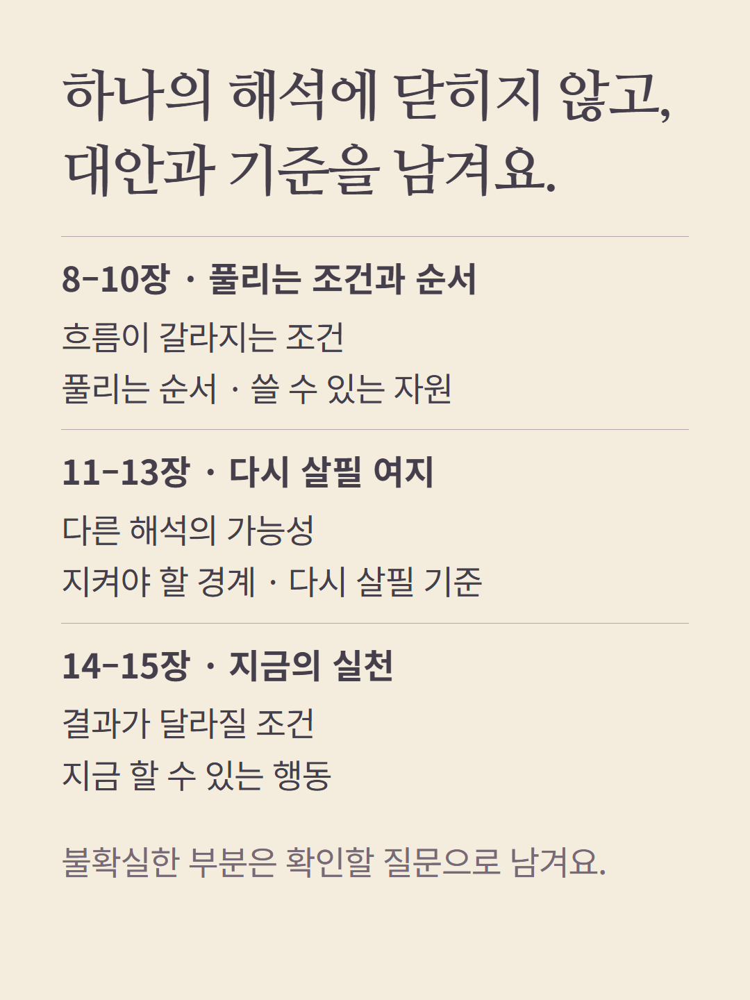
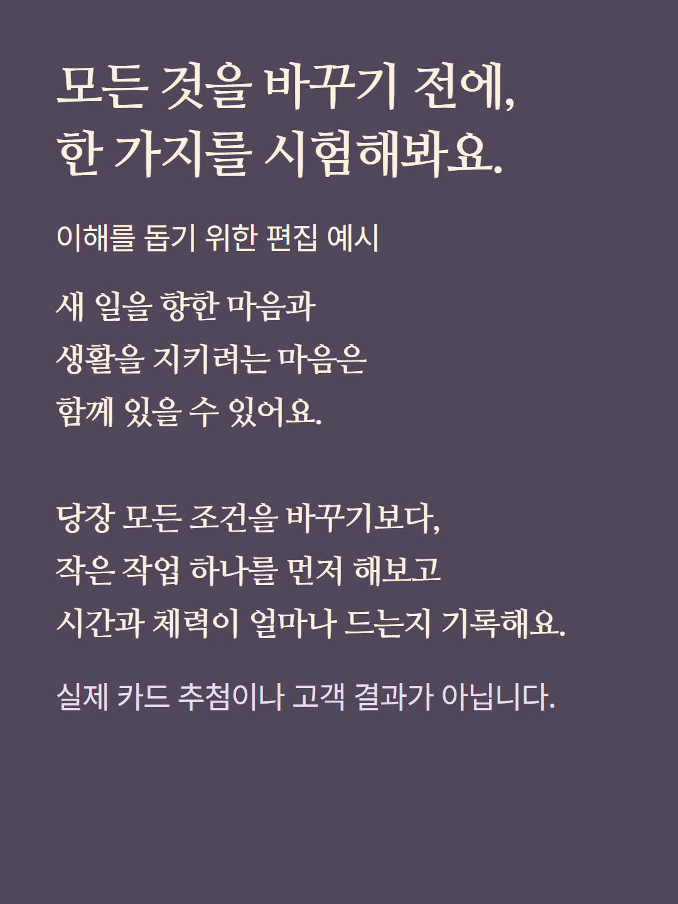
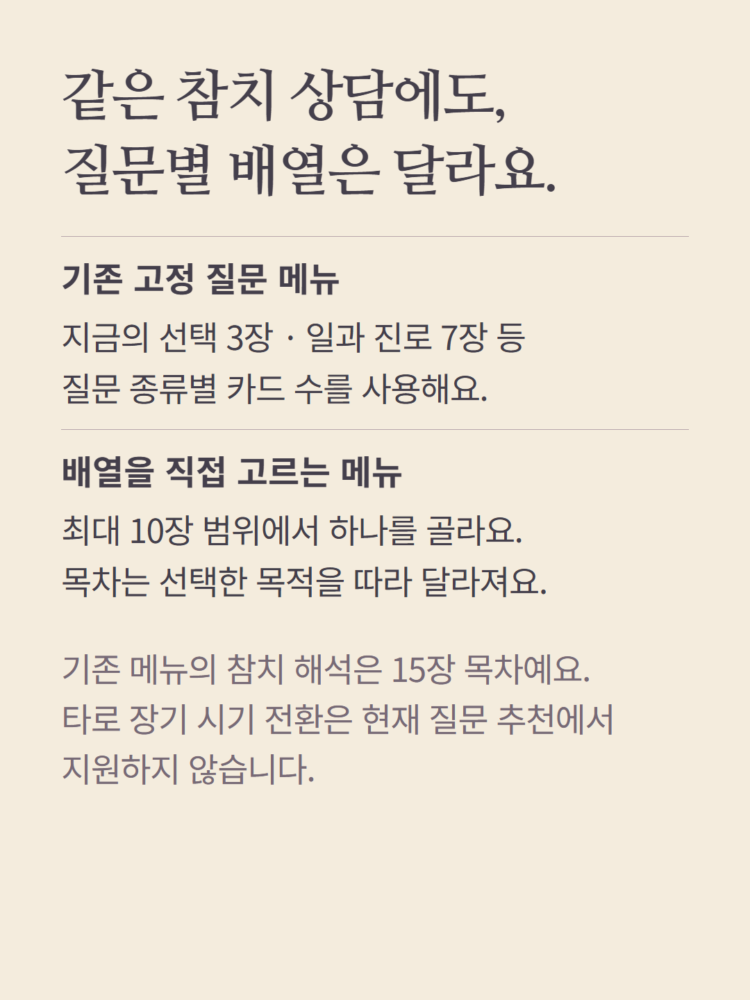
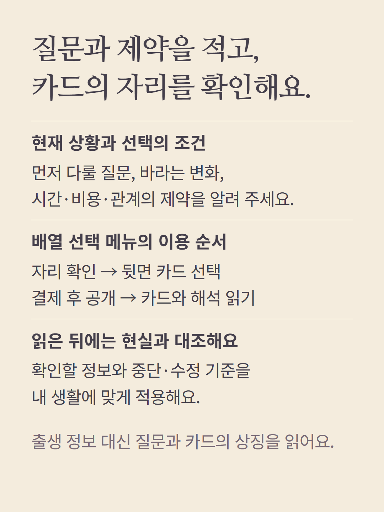
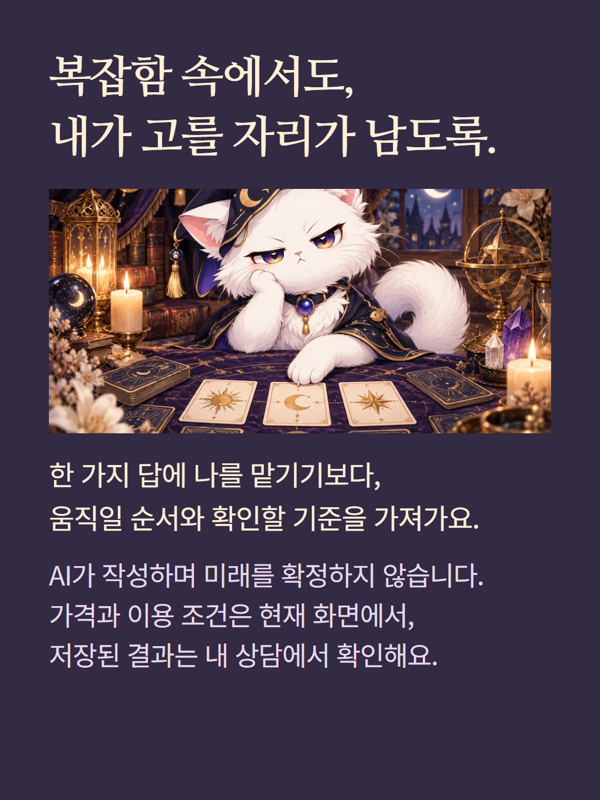

타로 참치는 기존 상담 선택 메뉴에서 15장 목차로 깊이 읽습니다. ‘질문으로 고르는 배열’에서는 최대 10장 중 배열 하나를 선택하며 이 안내는 10장 ‘복잡한 고민의 전체 지도’를 예로 삼습니다. 기존 고정 질문 메뉴는 종류별 카드 수를 사용하며 여러 배열이 한 번에 포함되지는 않습니다. 참치의 장기 시기 전환은 현재 타로 질문 추천에서 지원하지 않습니다. 출생 차트나 미래 날짜를 계산하는 상품이 아니라 질문·자리·카드 연결·조건을 해석합니다. 예시는 실제 추첨·고객 결과가 아닌 가상 편집이고 AI 작성 상담입니다. 가격·이용 조건은 현재 화면에서 확인하세요.